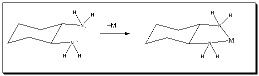

|
More Information on
the [tris(1,2-diaminocyclohexane)Co(III)]3+ Ion
The [tris(1,2-diaminocyclohexane)Co(III)]3+ Ion is shown on the left.
The diaminocyclohexyl ligand is neutral and does not deprotonated when it binds. Three neutal ligands are bound to the central Co(III) resulting in a 3+ charged complex ion.

Reference for the Structure: Initial coordinates were taken from the pdf file published structure of M. Marumo, Y. Utsumi, Y. Saito; Acta Crystallogr. Sect. B, Struct. Crystallogr. Cryst. Chem.; Vol 26, 1970, p. 1492. Hydrogen atoms were added
and the resultant molecule geometry optimized in Gaussian 03 (a DFT B3LYP/6-31G(d) Calculation).
|